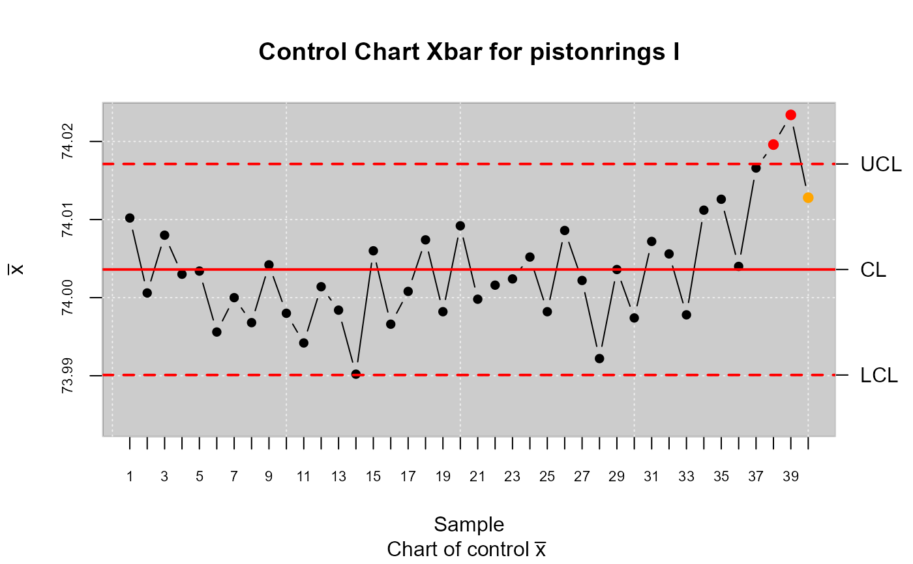
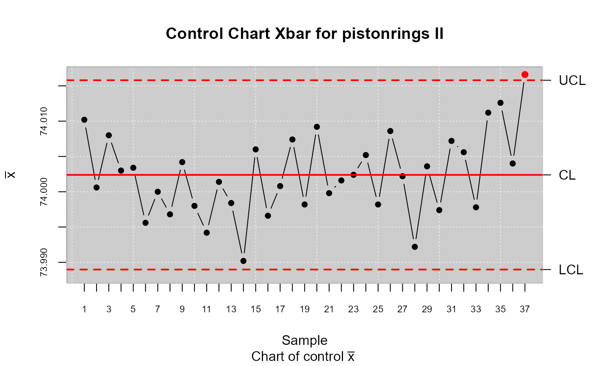
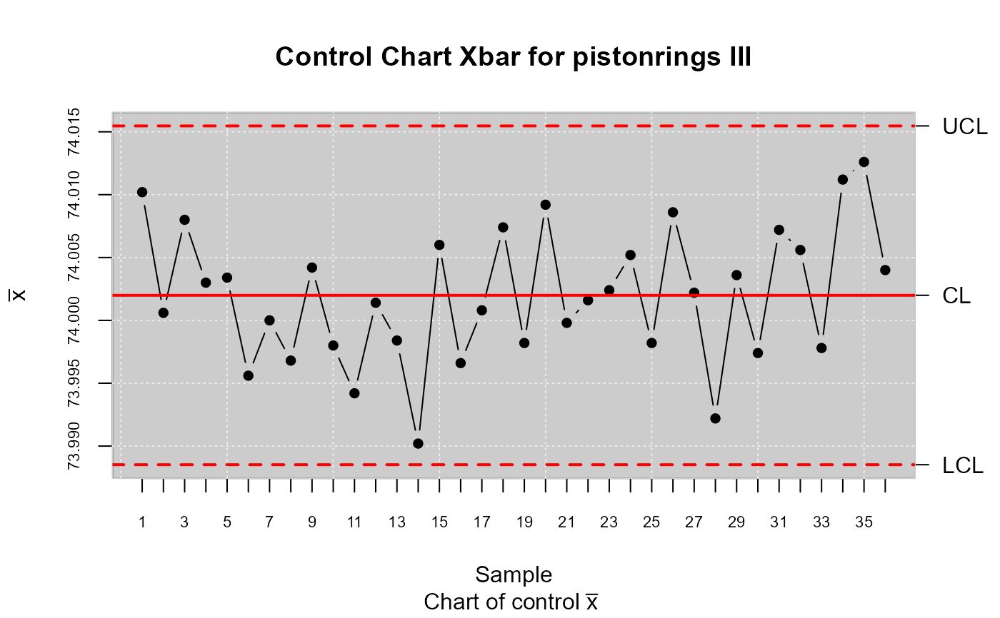

This function removes observations from the sample which violates the rules of a process under control
state.control(x)
| x | Object qcs (Quality Control Statistical) |
|---|
#> 'data.frame': 200 obs. of 3 variables: #> $ diameter: num 74 74 74 74 74 ... #> $ sample : int 1 1 1 1 1 2 2 2 2 2 ... #> $ trial : logi TRUE TRUE TRUE TRUE TRUE TRUE ...#> [1] "qcd" "data.frame"#> xbar chart for pistonrings #> #> Summary of group statistics: #> xbar #> Min. :73.99 #> 1st Qu.:74.00 #> Median :74.00 #> Mean :74.00 #> 3rd Qu.:74.01 #> Max. :74.02 #> #> Group sample size: 5 #> Number of groups: 40 #> Center of group statistics: 74.0036 #> Standard deviation: 0.01007094 #> #> Control limits: #> LCL UCL #> 73.99009 74.01712 #> #> Beyond limits of control: #> [1] 74.0196 74.0234 #> #> Violationg runs: #> [1] 74.0128res.qcd <- state.control(res.qcs) res.qcs <- qcs.xbar(res.qcd) plot(res.qcs,title="Control Chart Xbar for pistonrings II")#> xbar chart for pistonrings #> #> Summary of group statistics: #> xbar #> Min. :73.99 #> 1st Qu.:74.00 #> Median :74.00 #> Mean :74.00 #> 3rd Qu.:74.01 #> Max. :74.02 #> #> Group sample size: 5 #> Number of groups: 37 #> Center of group statistics: 74.00239 #> Standard deviation: 0.009992796 #> #> Control limits: #> LCL UCL #> 73.98898 74.0158 #> #> Beyond limits of control: #> [1] 74.0166 #> #> Number violationg runs: 0res.qcd <- state.control(res.qcs) res.qcs <- qcs.xbar(res.qcd) plot(res.qcs,title="Control Chart Xbar for pistonrings III")#> xbar chart for pistonrings #> #> Summary of group statistics: #> xbar #> Min. :73.99 #> 1st Qu.:74.00 #> Median :74.00 #> Mean :74.00 #> 3rd Qu.:74.01 #> Max. :74.01 #> #> Group sample size: 5 #> Number of groups: 36 #> Center of group statistics: 74.00199 #> Standard deviation: 0.01004347 #> #> Control limits: #> LCL UCL #> 73.98852 74.01547 #> #> Number beyond limits: 0 #> #> Number violationg runs: 0